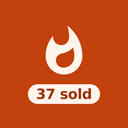
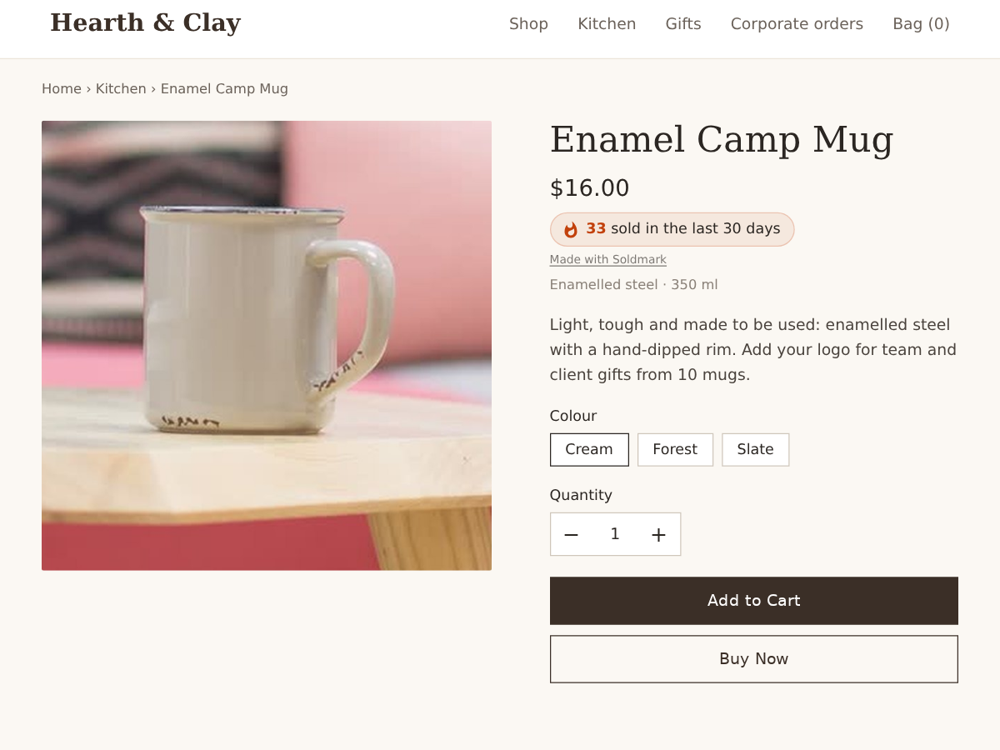

Soldmark
Real sold counts on your store product pages
- Counts real sales from your paid orders
- "37 sold in the last 30 days" by the price
- Hidden until a product sells your minimum
- Counts only: buyer names are never shown

What it does
A shopper on the fence looks for one signal before they buy: do other people buy this? This app puts a small line by the product name and price on your store product pages, such as "37 sold in the last 30 days", with the number taken from your own paid orders.
Nothing is made up. The count adds up the units of that product in paid orders, skips canceled and unpaid ones, and updates by itself. Visitors only ever see the number: no buyer names, no cities, no "someone just bought" popups.
A product that sold one or two would look worse with a count than without, so the line stays hidden until a product reaches your minimum (5 by default). Products below it show nothing at all.
The dashboard lists your best sellers of the last 7 and 30 days and which ones show a count now. One button adds the line to your product page.
In the editor you can set the minimum, choose a soft badge or a plain line, and pick the accent colour. Premium lets you count the last 7 days, 90 days or all time, write your own wording like "{count} happy customers this month", choose the icon, and round big numbers to "120+".
The free plan shows a small credit link under the count. Premium removes it.
Price
Free
- Sold count on product pages
- Last 30 days, real paid orders
- Your own minimum to show
- Small credit link
Premium
$4/month, 20% off yearly. Hidden pre-made plan "Premium" (vendorId premium) stays hidden
- 7 days, 90 days or all time
- Your own wording and icon
- Round big numbers to 120+
- Remove the credit link